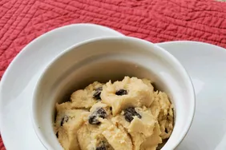

Edible Cookie Dough

What Makes This Cookie Dough Edible?
Traditional cookie dough is unsafe to consume before it’s baked because of the presence of eggs and raw flour. This recipe doesn’t contain eggs at all, but it does contain all-purpose flour — that’s why it’s important to heat-treat the flour (cook it at a high temperature to kill the dangerous bacteria) before you incorporate it into the dough.
Ingredients
- 1 cup all-purpose flour
- 3/4 cup packed brown sugar
- 1/2 cup butter
- 1 teaspoon vanilla extract
- 1/2 teaspoon salt
- 2 tablespoons milk
- 1/2 cup milk chocolate chips
- 1/2 cup mini chocolate chips
Recipe Instructions
- To heat-treat your flour so it is safe to use: Place flour in a microwave-safe dish and cook for 1 minute and 15 seconds, stirring it every 15 seconds. Set aside.
- Beat sugar and butter with an electric mixer in a large bowl until creamy. Beat in vanilla extract and salt. Add heat-treated flour; mix until a crumbly dough forms. Stir in milk until dough is just combined; fold in milk chocolate chips and mini chocolate chips.
Return to top
Return to main page